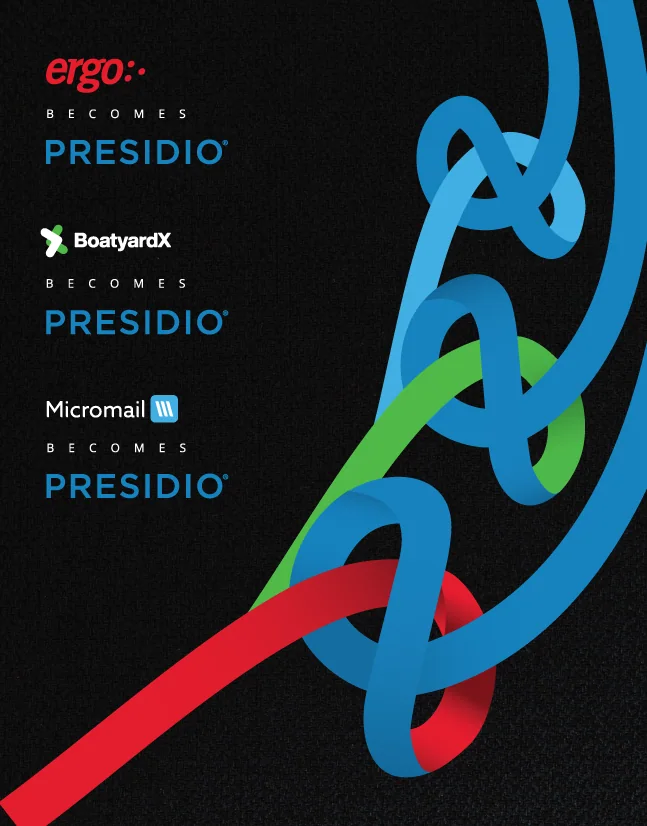
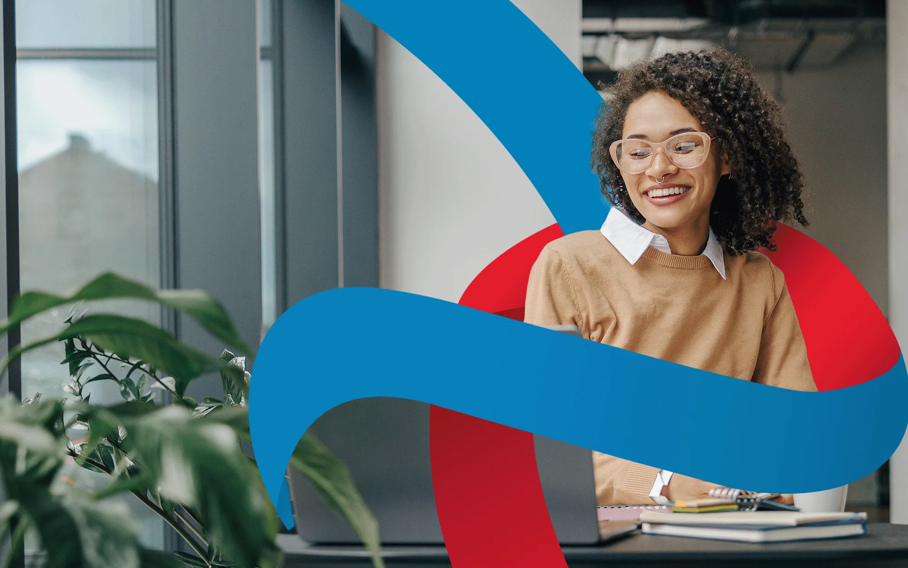
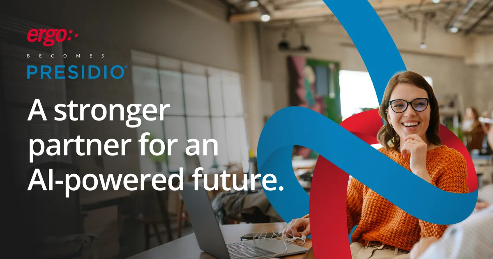
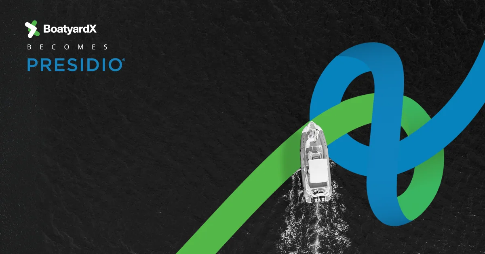
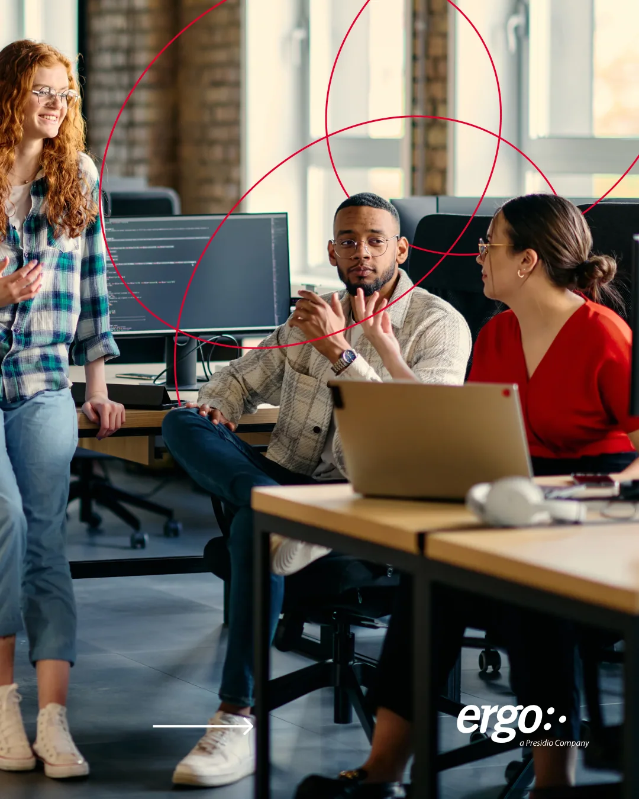
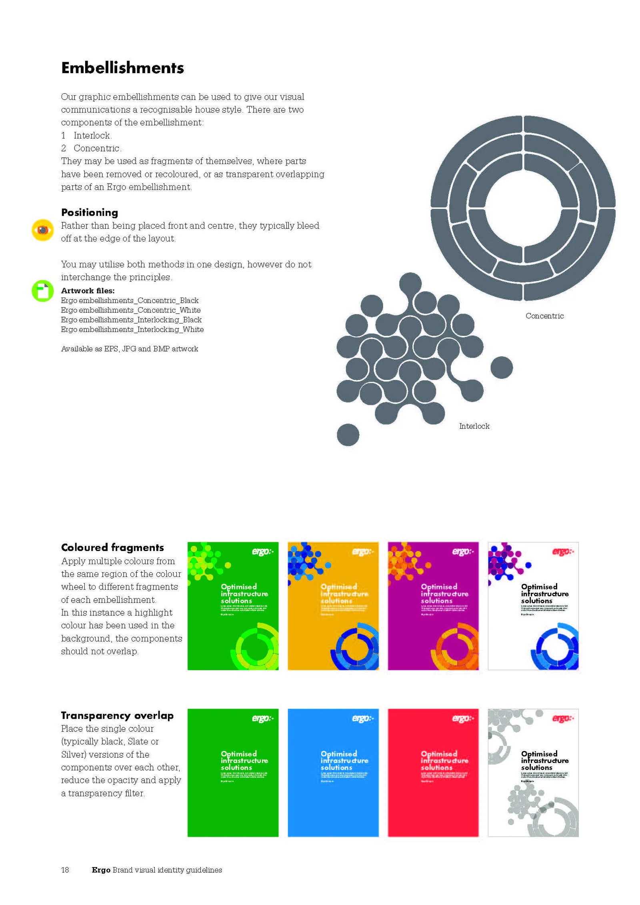
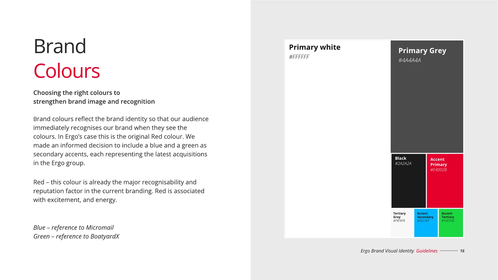
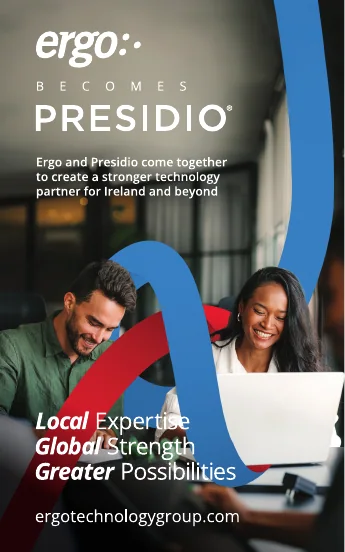

Not one brand replacing another.Two binding into something continuous.
ConstraintA brief that moved mid-project, and three brands that had to join Presidio without unsettling their customers.
ConceptA knot that opens in Ergo red and resolves into Presidio blue.
SystemOne lockup, one layout. Colour and photography flex per brand; the structure locks.
Output16 campaign posts, 68.8K impressions, July to October 2026. Campaign content, not design alone.
3brands moved on one shared transition system
1knot, reused on every touchpoint
68.8Kimpressions across 16 campaign posts, July to October 2026
Impressions are for campaign content on the Presidio Europe LinkedIn page, not for the design alone.
Every brand in the group had to make the same move.
Ergo started in a Dublin shed refilling printer cartridges. It grew into one of Ireland's largest IT service firms. Then Presidio acquired it, and every brand in the group had to make the same move without unsettling the customers who trusted it.
“I wrote the guideline. I knew what it was protecting against. I knew this wasn’t that.”
The first brief was Local Expertise, Global Strength. Then it moved: Greater Possibilities, and Presidio's emphasis on AI, expertise, people. I killed my city concept. A path between two skylines answered the old brief. It didn't answer this one.
The knot
The knot opens in Ergo red, interweaves through imagery of people, and resolves into Presidio blue. Not one brand replacing another, but two binding into something continuous.

The lockup system: one device, three brands.

The knot over team photography.
One variable flexes. Everything else locks.
One device, one BECOMES PRESIDIO lockup, one layout. What flexes per brand is the equity worth keeping: the anchor colour and the photographic world. Everything structural locks.

Ergo. Anchor colour red, resolves into Presidio blue.

BoatyardX. Anchor colour green, resolves into Presidio blue.Micromail. Anchor colour blue, resolves into Presidio blue.
The rule was right for a system. It was wrong for a campaign that needed to say two companies had become one.
I wrote the rule: avoid montaging images or putting vector graphics on top of photography. Eighteen months later I put vector ribbons over photography. The rule held a system together across three brands and dozens of hands. A single campaign had a different job.
Deck imagery.

Carousel.
From inherited guidelines to Presidio.
I inherited the 2017 Ergo guidelines and rebuilt them as one tri-brand system for Ergo, Micromail and BoatyardX. The Becomes campaign then retired that system into Presidio, and I took on the rebrand.
2017, inheritedEighteen colours, five typefaces and a colour wheel that was never put into practice.
2023, tri-brand systemOne system for three brands: red, blue and green rotating by brand, two typefaces, seven colours. Every deck, social post and piece of collateral for Ergo and Micromail came from it.
Becomes, the last campaignEach brand colour resolved into Presidio blue. The system retired.
Presidio, nowWe trade as Presidio. Presidio is still agreeing its visual refresh, so I am making the design calls for the Irish market and building the Irish design system in Figma, starting with templated social posts.

2017. Inherited guidelines.

2023. Tri-brand guidelines.

2026. Becomes, the last campaign.
Three projects, one logic.
The tri-brand system is the rule. Ergo becomes Presidio breaks it on purpose, for a transition. Stronger Together makes the same vector-over-photography move for an event.
Tri-brand systemThe system at rest, 2023 to 2026. One colour leads, everything else locks.
Ergo becomes PresidioThe system in motion, and the last campaign built on it. One device, three brands, resolving into Presidio blue.
Stronger TogetherThe same move for one night. Vector links over a photograph of the building.